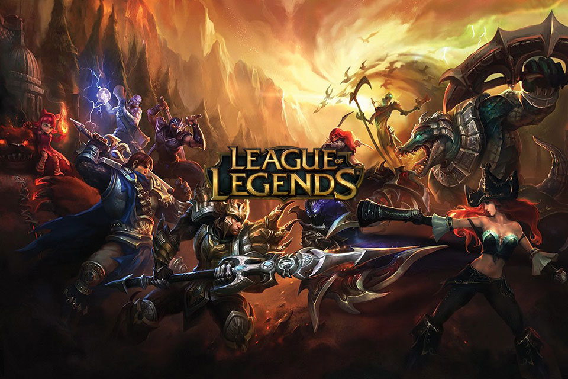

First Baron matters
Winning teams secured first Baron far more often than losing teams.
2022 esports dataset / Oracle's Elixir
A compact data science study of professional League of Legends matches, focused on objective control, role impact, missingness, model building, and fairness across league tiers.

Winning teams secured first Baron far more often than losing teams.
Bot creep score strongly tracks with support, jungle, and mid vision score.
A tuned decision tree improved substantially over the baseline classifier.
Loading the full original analysis from README.md...